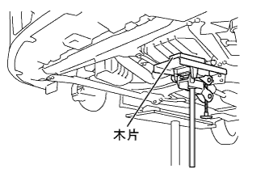
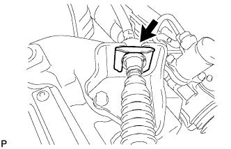
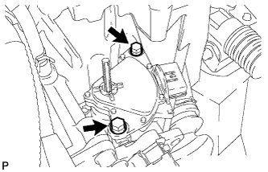

Neutral Start Switch Assembly (U660E) Removal |
| 1. Check Front Wheels Straight-ahead Position |
| 2. Disconnect Battery Negative Terminal |
| 3. Remove Radiator Upper Air Deflector |
 |
Remove the 9 clips and the radiator upper air deflector.
| 4. Remove V-bank Cover Sub-assembly |
 |
Place both hands on the front of the cover and lift it upward to disengage the 2 front clips, then continue lifting upward to disengage the 1 rear clips, and remove the V-bank cover.
| 5. Disconnect Battery Negative Terminal |
)| 6. Remove Battery |
 |
Loosen the nut and disconnect the battery positive terminal. (*1)
Remove the bolt and nut, and remove the battery clamp.
 |
Disconnect the current sensor connector.
Remove the insulator.
Remove the battery.
| 7. Remove Battery Carrier |
 |
Remove the battery tray.
Disengage the 2 clamps and disconnect the wire harness from the battery carrier.
Remove the 4 bolts and the battery carrier.
| 8. Remove Battery Carrier NO.2 |
 |
Remove the 2 bolts and battery carrier NO.2.
| 9. Remove Air Cleaner Cap w/ Air Cleaner Hose |
 |
Disconnect the air flow meter connector. (*1).
Disconnect ventilation hose No.2. (*2).
Disconnect the hose band (*3)
Disengage the 3 clamps and remove the air cleaner cap w/ air cleaner hose.
| 10. Remove Air Cleaner Case |
 |
Remove the 3 bolts and clamp, and remove the air cleaner case.
| 11. Remove Engine Mounting Insulator LH |
 |
Support the engine assembly w/ transaxle with a transmission jack using a wooden block or similar.
 |
Remove the bolt and nut, and disconnect the engine mounting insulator LH from the engine mounting bracket LH.
Operate the transmission jack to lower the engine assembly w/ transaxle.
 |
Remove the 4 bolts and remove the engine mounting insulator LH.
| 12. Remove Engine Mounting Bracket LH |
 |
Remove the bolt and disconnect the engine wire bracket from the engine mounting bracket.
Remove the 4 bolts and remove the engine mounting bracket LH from the transaxle.
| 13. Remove Neutral Start Switch Assembly |
Move the shift lever to the N range.
 |
Remove the clip from the transmission cable bracket.
 |
Remove the nut and disconnect the transmission control cable assembly from the control shaft lever.
Disconnect the connector from the neutral start switch.
 |
Remove the nut, washer and control shaft lever from the control shaft.
 |
Remove the 2 bolts and neutral start switch from the control shaft.